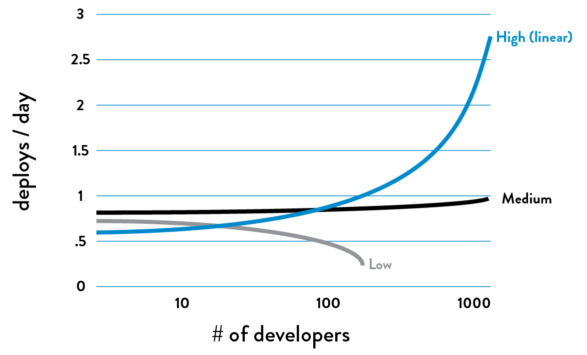

Imagine a World Where Dev and Ops Become DevOps
An Introduction to The DevOps Handbook
Imagine a world where product owners, Development, QA, IT Operations, and Infosec work together, not only to help each other, but also to ensure that the overall organization succeeds. By working toward a common goal, they enable the fast flow of planned work into production (e.g., performing tens, hundreds, or even thousands of code deploys per day), while achieving world-class stability, reliability, availability, and security.
In this world, cross-functional teams rigorously test their hypotheses of which features will most delight users and advance the organizational goals. They care not just about implementing user features, but also actively ensure their work flows smoothly and frequently through the entire value stream without causing chaos and disruption to IT Operations or any other internal or external customer.
Simultaneously, QA, IT Operations, and Infosec are always working on ways to reduce friction for the team, creating the work systems that enable developers to be more productive and get better outcomes. By adding the expertise of QA, IT Operations, and Infosec into delivery teams and automated self-service tools and platforms, teams are able to use that expertise in their daily work without being dependent on other teams.
This enables organizations to create a safe system of work, where small teams are able to quickly and independently develop, test, and deploy code and value quickly, safely, securely, and reliably to customers. This allows organizations to maximize developer productivity, enable organizational learning, create high employee satisfaction, and win in the marketplace.
These are the outcomes that result from DevOps. For most of us, this is not the world we live in. More often than not, the system we work in is broken, resulting in extremely poor outcomes that fall well short of our true potential. In our world, Development and IT Operations are adversaries; testing and Infosec activities happen only at the end of a project, too late to correct any problems found; and almost any critical activity requires too much manual effort and too many handoffs, leaving us to always be waiting. Not only does this contribute to extremely long lead times to get anything done, but the quality of our work, especially production deployments, is also problematic and chaotic, resulting in negative impacts to our customers and our business.
As a result, we fall far short of our goals, and the whole organization is dissatisfied with the performance of IT, resulting in budget reductions and frustrated, unhappy employees who feel powerless to change the process and its outcomes.† The solution? We need to change how we work; DevOps shows us the best way forward.
To better understand the potential of the DevOps revolution, let us look at the Manufacturing Revolution of the 1980s. By adopting Lean principles and practices, manufacturing organizations dramatically improved plant productivity, customer lead times, product quality, and customer satisfaction, enabling them to win in the marketplace.
Before the revolution, average manufacturing plant order lead times were six weeks, with fewer than 70% of orders being shipped on time. By 2005, with the widespread implementation of Lean practices, average product lead times had dropped to less than three weeks, and more than 95% of orders were being shipped on time. Organizations that did not implement Lean practices lost market share, and many went out of business entirely.
Similarly, the bar has been raised for delivering technology products and services—what was good enough in previous decades is not good enough now. For each of the last four decades, the cost and time required to develop and deploy strategic business capabilities and features has dropped by orders of magnitude. During the 1970s and 1980s, most new features required one to five years to develop and deploy, often costing tens of millions of dollars.
By the 2000’s, because of advances in technology and the adoption of Agile principles and practices, the time required to develop new functionality had dropped to weeks or months, but deploying into production would still require weeks or months, often with catastrophic outcomes.
And by 2010, with the introduction of DevOps and the neverending commoditization of hardware, software, and now the cloud, features (and even entire startup companies) could be created in weeks, quickly being deployed into production in just hours or minutes—for these organizations, deployment finally became routine and low risk. These organizations are able to perform experiments to test business ideas, discovering which ideas create the most value for customers and the organization as a whole, which are then further developed into features that can be rapidly and safely deployed into production.
Table 1. The ever accelerating trend toward faster, cheaper, low-risk delivery of software
(Source: Adrian Cockcroft, “Velocity and Volume (or Speed Wins),” presentation at FlowCon, San Francisco, CA, November 2013.)
Today, organizations adopting DevOps principles and practices often deploy changes hundreds or even thousands of times per day. In an age where competitive advantage requires fast time to market and relentless experimentation, organizations that are unable to replicate these outcomes are destined to lose in the marketplace to more nimble competitors and could potentially go out of business entirely, much like the manufacturing organizations that did not adopt Lean principles.
These days, regardless of what industry we are competing in, the way we acquire customers and deliver value to them is dependent on the technology value stream. Put even more succinctly, as Jeffrey Immelt, CEO of General Electric, stated, “Every industry and company that is not bringing software to the core of their business will be disrupted.” Or as Jeffrey Snover, Technical Fellow at Microsoft, said, “In previous economic eras, businesses created value by moving atoms. Now they create value by moving bits.”
It’s difficult to overstate the enormity of this problem—it affects every organization, independent of the industry we operate in, the size of our organization, whether we are profit or non-profit. Now more than ever, how technology work is managed and performed predicts whether our organizations will win in the marketplace, or even survive. In many cases, we will need to adopt principles and practices that look very different from those that have successfully guided us over the past decades. See Appendix 1.
Now that we have established the urgency of the problem that DevOps solves, let us take some time to explore in more detail the symptomatology of the problem, why it occurs, and why, without dramatic intervention, the problem worsens over time.
THE PROBLEM: SOMETHING IN YOUR ORGANIZATION MUST NEED IMPROVEMENT (OR YOU WOULDN’T BE READING THIS BOOK)
Most organizations are not able to deploy production changes in minutes or hours, instead requiring weeks or months. Nor are they able to deploy hundreds or thousands of changes into production per day; instead, they struggle to deploy monthly or even quarterly. Nor are production deployments routine, instead involving outages and chronic firefighting and heroics.
In an age where competitive advantage requires fast time to market, high service levels, and relentless experimentation, these organizations are at a significant competitive disadvantage. This is in large part due to their inability to resolve a core, chronic conflict within their technology organization.
THE CORE, CHRONIC CONFLICT
In almost every IT organization, there is an inherent conflict between Development and IT Operations which creates a downward spiral, resulting in ever-slower time to market for new products and features, reduced quality, increased outages, and, worst of all, an ever-increasing amount of technical debt.
The term “technical debt” was first coined by Ward Cunningham. Analogous to financial debt, technical debt describes how decisions we make lead to problems that get increasingly more difficult to fix over time, continually reducing our available options in the future—even when taken on judiciously, we still incur interest.
One factor that contributes to this is the often competing goals of Development and IT Operations. IT organizations are responsible for many things. Among them are the two following goals, which must be pursued simultaneously:
- Respond to the rapidly changing competitive landscape
- Provide stable, reliable, and secure service to the customer
Frequently, Development will take responsibility for responding to changes in the market, deploying features and changes into production as quickly as possible. IT Operations will take responsibility for providing customers with IT service that is stable, reliable, and secure, making it difficult or even impossible for anyone to introduce production changes that could jeopardize production. Configured this way, Development and IT Operations have diametrically opposed goals and incentives.
Dr. Eliyahu M. Goldratt, one of the founders of the manufacturing management movement, called these types of configuration “the core, chronic conflict”—when organizational measurements and incentives across different silos prevent the achievement of global, organizational goals.‡
This conflict creates a downward spiral so powerful it prevents the achievement of desired business outcomes, both inside and outside the IT organization. These chronic conflicts often put technology workers into situations that lead to poor software and service quality, and bad customer outcomes, as well as a daily need for workarounds, firefighting, and heroics, whether in Product Management, Development, QA, IT Operations, or Information Security. See Appendix 2.
DOWNWARD SPIRAL IN THREE ACTS
The downward spiral in IT has three acts that are likely familiar to most IT practitioners.
The first act begins in IT Operations, where our goal is to keep applications and infrastructure running so that our organization can deliver value to customers. In our daily work, many of our problems are due to applications and infrastructure that are complex, poorly documented, and incredibly fragile. This is the technical debt and daily workarounds that we live with constantly, always promising that we’ll fix the mess when we have a little more time. But that time never comes.
Alarmingly, our most fragile artifacts support either our most important revenue-generating systems or our most critical projects. In other words, the systems most prone to failure are also our most important and are at the epicenter of our most urgent changes. When these changes fail, they jeopardize our most important organizational promises, such as availability to customers, revenue goals, security of customer data, accurate financial reporting, and so forth.
The second act begins when somebody has to compensate for the latest broken promise—it could be a product manager promising a bigger, bolder feature to dazzle customers with or a business executive setting an even larger revenue target. Then, oblivious to what technology can or can’t do, or what factors led to missing our earlier commitment, they commit the technology organization to deliver upon this new promise.
As a result, Development is tasked with another urgent project that inevitably requires solving new technical challenges and cutting corners to meet the promised release date, further adding to our technical debt—made, of course, with the promise that we’ll fix any resulting problems when we have a little more time.
This sets the stage for the third and final act, where everything becomes just a little more difficult, bit by bit—everybody gets a little busier, work takes a little more time, communications become a little slower, and work queues get a little longer. Our work becomes more tightly-coupled, smaller actions cause bigger failures, and we become more fearful and less tolerant of making changes. Work requires more communication, coordination, and approvals; teams must wait just a little longer for their dependent work to get done; and our quality keeps getting worse. The wheels begin grinding slower and require more effort to keep turning. See Appendix 3.
Although it’s difficult to see in the moment, the downward spiral is obvious when one takes a step back. We notice that production code deployments are taking ever-longer to complete, moving from minutes to hours to days to weeks. And worse, the deployment outcomes have become even more problematic, that resulting in an ever-increasing number of customer-impacting outages that require more heroics and firefighting in Operations, further depriving them of their ability to pay down technical debt.
As a result, our product delivery cycles continue to move slower and slower, fewer projects are undertaken, and those that are, are less ambitious. Furthermore, the feedback on everyone’s work becomes slower and weaker, especially the feedback signals from our customers. And, regardless of what we try, things seem to get worse—we are no longer able to respond quickly to our changing competitive landscape, nor are we able to provide stable, reliable service to our customers. As a result, we ultimately lose in the marketplace.
Time and time again, we learn that when IT fails, the entire organization fails. As Steven J. Spear noted in his book The High-Velocity Edge, whether the damages “unfold slowly like a wasting disease” or rapidly “like a fiery crash...the destruction can be just as complete.”
WHY DOES THIS DOWNWARD SPIRAL HAPPEN EVERYWHERE?
For over a decade, the authors of this book have observed this destructive spiral occur in countless organizations of all types and sizes. We understand better than ever why this downward spiral occurs and why it requires DevOps principles to mitigate. First, as described earlier, every IT organization has two opposing goals, and second, every company is a technology company, whether they know it or not.
As Christopher Little, a software executive and one of the earliest chroniclers of DevOps, said, “Every company is a technology company, regardless of what business they think they’re in. A bank is just an IT company with a banking license.”§
To convince ourselves that this is the case, consider that the vast majority of capital projects have some reliance upon IT. As the saying goes, “It is virtually impossible to make any business decision that doesn’t result in at least one IT change.”
In the business and finance context, projects are critical because they serve as the primary mechanism for change inside organizations. Projects are typically what management needs to approve, budget for, and be held accountable for; therefore, they are the mechanism that achieve the goals and aspirations of the organization, whether it is to grow or even shrink.¶
Projects are typically funded through capital spending (i.e., factories, equipment, and major projects, and expenditures are capitalized when payback is expected to take years), of which 50% is now technology related. This is even true in “low tech” industry verticals with the lowest historical spending on technology, such as energy, metal, resource extraction, automotive, and construction. In other words, business leaders are far more reliant upon the effective management of IT in order to achieve their goals than they think.**
THE COSTS: HUMAN AND ECONOMIC
When people are trapped in this downward spiral for years, especially those who are downstream of Development, they often feel stuck in a system that pre-ordains failure and leaves them powerless to change the outcomes. This powerlessness is often followed by burnout, with the associated feelings of fatigue, cynicism, and even hopelessness and despair.
Many psychologists assert that creating systems that cause feelings of powerlessness is one of the most damaging things we can do to fellow human beings—we deprive other people of their ability to control their own outcomes and even create a culture where people are afraid to do the right thing because of fear of punishment, failure, or jeopardizing their livelihood. This can create the conditions of learned helplessness, where people become unwilling or unable to act in a way that avoids the same problem in the future.
For our employees, it means long hours, working on weekends, and a decreased quality of life, not just for the employee, but for everyone who depends on them, including family and friends. It is not surprising that when this occurs, we lose our best people (except for those that feel like they can’t leave, because of a sense of duty or obligation).
In addition to the human suffering that comes with the current way of working, the opportunity cost of the value that we could be creating is staggering—the authors believe that we are missing out on approximately $2.6 trillion of value creation per year, which is, at the time of this writing, equivalent to the annual economic output of France, the sixth-largest economy in the world.
Consider the following calculation—both IDC and Gartner estimated that in 2011, approximately 5% of the worldwide gross domestic product($3.1 trillion) was spent on IT (hardware, services, and telecom). If we estimate that 50% of that $3.1 trillion was spent on operating costs and maintaining existing systems, and that one-third of that 50% was spent on urgent and unplanned work or rework, approximately $520 billion was wasted.
If adopting DevOps could enable us, through better management and increased operational excellence, to halve that waste and redeploy that human potential into something that’s five times the value (a modest proposal), we could create $2.6 trillion of value per year.
THE ETHICS OF DEVOPS: THERE IS A BETTER WAY
In the previous sections, we described the problems and the negative consequences of the status quo due to the core, chronic conflict, from the inability to achieve organizational goals, to the damage we inflict on fellow human beings. By solving these problems, DevOps astonishingly enables us to simultaneously improve organizational performance, achieve the goals of all the various functional technology roles (e.g., Development, QA, IT Operations, Infosec), and improve the human condition.
This exciting and rare combination may explain why DevOps has generated so much excitement and enthusiasm in so many in such a short time, including technology leaders, engineers, and much of the software ecosystem we reside in.
BREAKING THE DOWNWARD SPIRAL WITH DEVOPS
Ideally, small teams of developers independently implement their features, validate their correctness in production-like environments, and have their code deployed into production quickly, safely and securely. Code deployments are routine and predictable. Instead of starting deployments at midnight on Friday and spending all weekend working to complete them, deployments occur throughout the business day when everyone is already in the office and without our customers even noticing—except when they see new features and bug fixes that delight them. And, by deploying code in the middle of the workday, for the first time in decades IT Operations is working during normal business hours like everyone else.
By creating fast feedback loops at every step of the process, everyone can immediately see the effects of their actions. Whenever changes are committed into version control, fast automated tests are run in production-like environments, giving continual assurance that the code and environments operate as designed and are always in a secure and deployable state.
Automated testing helps developers discover their mistakes quickly (usually within minutes), which enables faster fixes as well as genuine learning—learning that is impossible when mistakes are discovered six months later during integration testing, when memories and the link between cause and effect have long faded. Instead of accruing technical debt, problems are fixed as they are found, mobilizing the entire organization if needed, because global goals outweigh local goals.
Pervasive production telemetry in both our code and production environments ensure that problems are detected and corrected quickly, confirming that everything is working as intended and customers are getting value from the software we create.
In this scenario, everyone feels productive—the architecture allows small teams to work safely and architecturally decoupled from the work of other teams who use self-service platforms that leverage the collective experience of Operations and Information Security. Instead of everyone waiting all the time, with large amounts of late, urgent rework, teams work independently and productively in small batches, quickly and frequently delivering new value to customers.
Even high-profile product and feature releases become routine by using dark launch techniques. Long before the launch date, we put all the required code for the feature into production, invisible to everyone except internal employees and small cohorts of real users, allowing us to test and evolve the feature until it achieves the desired business goal.
And, instead of firefighting for days or weeks to make the new functionality work, we merely change a feature toggle or configuration setting. This small change makes the new feature visible to ever-larger segments of customers, automatically rolling back if something goes wrong. As a result, our releases are controlled, predictable, reversible, and low stress.
It’s not just feature releases that are calmer—all sorts of problems are being found and fixed early, when they are smaller, cheaper, and easier to correct. With every fix, we also generate organizational learnings, enabling us to prevent the problem from recurring and enabling us to detect and correct similar problems faster in the future.
Furthermore, everyone is constantly learning, fostering a hypothesis-driven culture where the scientific method is used to ensure nothing is taken for granted—we do nothing without measuring and treating product development and process improvement as experiments.
Because we value everyone’s time, we don’t spend years building features that our customers don’t want, deploying code that doesn’t work, or fixing something that isn’t actually the cause of our problem.
Because we care about achieving goals, we create long-term teams that are responsible for meeting them. Instead of project teams where developers are reassigned and shuffled around after each release, never receiving feedback on their work, we keep teams intact so they can keep iterating and improving, using those learnings to better achieve their goals. This is equally true for the product teams who are solving problems for our external customers, as well as our internal platform teams who are helping other teams be more productive, safe, and secure.
Instead of a culture of fear, we have a high-trust, collaborative culture, where people are rewarded for taking risks. They are able to fearlessly talk about problems as opposed to hiding them or putting them on the backburner—after all, we must see problems in order to solve them.
And, because everyone fully owns the quality of their work, everyone builds automated testing into their daily work and uses peer reviews to gain confidence that problems are addressed long before they can impact a customer. These processes mitigate risk, as opposed to approvals from distant authorities, allowing us to deliver value quickly, reliably, and securely—even proving to skeptical auditors that we have an effective system of internal controls.
And when something does go wrong, we conduct blameless post-mortems, not to punish anyone, but to better understand what caused the accident and how to prevent it. This ritual reinforces our culture of learning. We also hold internal technology conferences to elevate our skills and ensure that everyone is always teaching and learning.
Because we care about quality, we even inject faults into our production environment so we can learn how our system fails in a planned manner. We conduct planned exercises to practice large-scale failures, randomly kill processes and compute servers in production, and inject network latencies and other nefarious acts to ensure we grow ever more resilient. By doing this, we enable better resilience, as well as organizational learning and improvement.
In this world, everyone has ownership in their work, regardless of their role in the technology organization They have confidence that their work matters and is meaningfully contributing to organizational goals, proven by their low-stress work environment and their organization’s success in the marketplace. Their proof is that the organization is indeed winning in the marketplace.
THE BUSINESS VALUE OF DEVOPS
We have decisive evidence of the business value of DevOps. From 2013 through 2016, as part of Puppet Labs’ State Of DevOps Report, to which authors Jez Humble and Gene Kim contributed, we collected data from over twenty-five thousand technology professionals, with the goal of better understanding the health and habits of organizations at all stages of DevOps adoption.
The first surprise this data revealed was how much high-performing organizations using DevOps practices were outperforming their non–high performing peers in the following areas:
- Throughput metrics
- Code and change deployments (thirty times more frequent)
- Code and change deployment lead time (two hundred times faster)
- Reliability metrics
- Production deployments (sixty times higher change success rate)
- Mean time to restore service (168 times faster)
- Organizational performance metrics
- Productivity, market share, and profitability goals (two times more likely to exceed)
- Market capitalization growth (50% higher over three years)
In other words, high performers were both more agile and more reliable, providing empirical evidence that DevOps enables us to break the core, chronic conflict. High performers deployed code thirty times more frequently, and the time required to go from “code committed” to “successfully running in production” was two hundred times faster—high performers had lead times measured in minutes or hours, while low performers had lead times measured in weeks, months, or even quarters.
Furthermore, high performers were twice as likely to exceed profitability, market share, and productivity goals. And, for those organizations that provided a stock ticker symbol, we found that high performers had 50% higher market capitalization growth over three years. They also had higher employee job satisfaction, lower rates of employee burnout, and their employees were 2.2 times more likely to recommend their organization to friends as a great place to work.†† High performers also had better information security outcomes. By integrating security objectives into all stages of the development and operations processes, they spent 50% less time remediating security issues.
DEVOPS HELPS SCALE DEVELOPER PRODUCTIVITY
When we increase the number of developers, individual developer productivity often significantly decreases due to communication, integration, and testing overhead. This is highlighted in the famous book by Frederick Brook, The Mythical Man-Month, where he explains that when projects are late, adding more developers not only decreases individual developer productivity but also decreases overall productivity.
On the other hand, DevOps shows us that when we have the right architecture, the right technical practices, and the right cultural norms, small teams of developers are able to quickly, safely, and independently develop, integrate, test, and deploy changes into production. As Randy Shoup, formerly a director of engineering at Google, observed, large organizations using DevOps “have thousands of developers, but their architecture and practices enable small teams to still be incredibly productive, as if they were a startup.”
The 2015 State of DevOps Report examined not only “deploys per day” but also “deploys per day per developer.” We hypothesized that high performers would be able to scale their number of deployments as team sizes grew.
 Figure 1. Deployments/day vs. number of developers (Source: Puppet Labs, 2015 State Of DevOps Report.)‡‡
Indeed, this is what we found. Figure 1 shows that in low performers, deploys per day per developer go down as team size increases, stays constant for medium performers, and increases linearly for high performers.
In other words, organizations adopting DevOps are able to linearly increase the number of deploys per day as they increase their number of developers, just as Google, Amazon, and Netflix have done.§§
THE UNIVERSALITY OF THE SOLUTION
One of the most influential books in the Lean manufacturing movement is The Goal: A Process of Ongoing Improvement written by Dr. Eliyahu M. Goldratt in 1984. It influenced an entire generation of professional plant managers around the world. It was a novel about a plant manager who had to fix his cost and product due date issues in ninety days, otherwise his plant would be shut down.
Later in his career, Dr. Goldratt described the letters he received in response to The Goal. These letters would typically read, “You have obviously been hiding in our factory, because you’ve described my life [as a plant manager] exactly…” Most importantly, these letters showed people were able to replicate the breakthroughs in performance that were described in the book in their own work environments.
The Phoenix Project: A Novel About IT, DevOps, and Helping Your Business Win, written by Gene Kim, Kevin Behr, and George Spafford in 2013, was closely modeled after The Goal. It is a novel that follows an IT leader who faces all the typical problems that are endemic in IT organizations: an over-budget, behind-schedule project that must get to market in order for the company to survive. He experiences catastrophic deployments; problems with availability, security, and compliance; and so forth. Ultimately, he and his team use DevOps principles and practices to overcome those challenges, helping their organization win in the marketplace. In addition, the novel shows how DevOps practices improved the workplace environment for the team, creating lower stress and higher satisfaction because of greater practitioner involvement throughout the process.
As with The Goal, there is tremendous evidence of the universality of the problems and solutions described in The Phoenix Project. Consider some of the statements found in the Amazon reviews: “I find myself relating to the characters in The Phoenix Project...I’ve probably met most of them over the course of my career,” “If you have ever worked in any aspect of IT, DevOps, or Infosec you will definitely be able to relate to this book,” or “There’s not a character in The Phoenix Project that I don’t identify with myself or someone I know in real life… not to mention the problems faced and overcome by those characters.”
In the remainder of this book, we will describe how to replicate the transformation described in The Phoenix Project, as well provide many case studies of how other organizations have used DevOps principles and practices to replicate those outcomes.
THE DEVOPS HANDBOOK: AN ESSENTIAL GUIDE
The purpose of the DevOps Handbook is to give you the theory, principles, and practices you need to successfully start your DevOps initiative and achieve your desired outcomes. This guidance is based on decades of sound management theory, study of high-performing technology organizations, work we have done helping organizations transform, and research that validates the effectiveness of the prescribed DevOps practices. As well as interviews with relevant subject matter experts and analyses of nearly one hundred case studies presented at the DevOps Enterprise Summit.
Broken into six parts, this book covers DevOps theories and principles using the Three Ways, a specific view of the underpinning theory originally introduced in The Phoenix Project. The DevOps Handbook is for everyone who performs or influences work in the technology value stream (which typically includes Product Management, Development, QA, IT Operations, and Information Security), as well as for business and marketing leadership, where most technology initiatives originate.
The reader is not expected to have extensive knowledge of any of these domains, or of DevOps, Agile, ITIL, Lean, or process improvement. Each of these topics is introduced and explained in the book as it becomes necessary.
Our intent is to create a working knowledge of the critical concepts in each of these domains, both to serve as a primer and to introduce the language necessary to help practitioners work with all their peers across the entire IT value stream, and to frame shared goals.
This book will be of value to business leaders and stakeholders who are increasingly reliant upon the technology organization for the achievement of their goals.
Furthermore, this book is intended for readers whose organizations might not be experiencing all the problems described in the book (e.g., long deployment lead times or painful deployments). Even readers in this fortunate position will benefit from understanding DevOps principles, especially those relating to shared goals, feedback, and continual learning.
In Part I, we present a brief history of DevOps and introduce the underpinning theory and key themes from relevant bodies of knowledge that span over decades. We then present the high level principles of the Three Ways: Flow, Feedback, and Continual Learning and Experimentaion.
Part II describes how and where to start, and presents concepts such as value streams, organizational design principles and patterns, organizational adoption patterns, and case studies.
Part III describes how to accelerate Flow by building the foundations of our deployment pipeline: enabling fast and effective automated testing, continuous integration, continuous delivery, and architecting for low-risk releases.
Part IV discusses how to accelerate and amplify Feedback by creating effective production telemetry to see and solve problems, better anticipate problems and achieve goals, enable feedback so that Dev and Ops can safely deploy changes, integrate A/B testing into our daily work, and create review and coordination processes to increase the quality of our work.
Part V describes how we accelerate Continual Learning by establishing a just culture, converting local discoveries into global improvements, and properly reserving time to create organizational learning and improvements.
Finally, in Part VI we describe how to properly integrate security and compliance into our daily work, by integrating preventative security controls into shared source code repositories and services, integrating security into our deployment pipeline, enhancing telemetry to better enable detection and recovery, protecting the deployment pipeline, and achieving change management objectives.
By codifying these practices, we hope to accelerate the adoption of DevOps practices, increase the success of DevOps initiatives, and lower the activation energy required for DevOps transformations.

Table of contents
- Preface
- Foreword
- Imagine a World Where Dev and Ops Become DevOps
-
Part I The Three Ways
- A BRIEF HISTORY
- 1 Agile, Continuous Delivery, and the Three Ways
- 2 The First Way: The Principles of Flow
- 3 The Second Way: The Principles of Feedback
- 4 The Third Way: The Principles of Continual Learning and Experimentation
-
Part II Where to Start
- Introduction
- 5 Selecting Which Value Stream to Start With
- 6 Understanding the Work in Our Value Stream, Making it Visible, and Expanding it Across the Organization
-
7 How to Design Our Organization and Architecture with Conway’s Law in Mind
- ORGANIZATIONAL ARCHETYPES
- PROBLEMS OFTEN CAUSED BY OVERLY FUNCTIONAL ORIENTATION (“OPTIMIZING FOR COST”)
- ENABLE MARKET-ORIENTED TEAMS (“OPTIMIZING FOR SPEED”)
- MAKING FUNCTIONAL ORIENTATION WORK
- TESTING, OPERATIONS, AND SECURITY AS EVERYONE’S JOB, EVERY DAY
- ENABLE EVERY TEAM MEMBER TO BE A GENERALIST
- FUND NOT PROJECTS, BUT SERVICES AND PRODUCTS
- DESIGN TEAM BOUNDARIES IN ACCORDANCE WITH CONWAY’S LAW
- CREATE LOOSELY-COUPLED ARCHITECTURES TO ENABLE DEVELOPER PRODUCTIVITY AND SAFETY
- CONCLUSION
- 8 How to Get Great Outcomes by Integrating Operations into the Daily Work of Development
-
PART III—THE FIRST WAY: THE TECHNICAL PRACTICES OF FLOW
- 9 Create the Foundations of Our Deployment Pipeline
-
10 Enable Fast and Reliable Automated Testing
- CONTINUOUSLY BUILD, TEST, AND INTEGRATE OUR CODE AND ENVIRONMENTS
-
BUILD A FAST AND RELIABLE AUTOMATED VALIDATION TEST SUITE
- CATCH ERRORS AS EARLY IN OUR AUTOMATED TESTING AS POSSIBLE
- ENSURE TESTS RUN QUICKLY (IN PARALLEL, IF NECESSARY)
- WRITE OUR AUTOMATED TESTS BEFORE WE WRITE THE CODE (“TEST-DRIVEN DEVELOPMENT”)
- AUTOMATE AS MANY OF OUR MANUAL TESTS AS POSSIBLE
- INTEGRATE PERFORMANCE TESTING INTO OUR TEST SUITE
- INTEGRATE NON-FUNCTIONAL REQUIREMENTS TESTING INTO OUR TEST SUITE
- PULL OUR ANDON CORD WHEN THE DEPLOYMENT PIPELINE BREAKS
- CONCLUSION
- 11 Enable and Practice Continuous Integration
- 12 Automate and Enable Low-Risk Releases
- 13 Architect for Low-Risk Releases
-
PART IV—THE SECOND WAY: THE TECHNICAL PRACTICES OF FEEDBACK
- Introduction
-
14 Create Telemetry to Enable Seeing and Solving Problems
- CREATE OUR CENTRALIZED TELEMETRY INFRASTRUCTURE
- CREATE APPLICATION LOGGING TELEMETRY THAT HELPS PRODUCTION
- USE TELEMETRY TO GUIDE PROBLEM SOLVING
- ENABLE CREATION OF PRODUCTION METRICS AS PART OF DAILY WORK
- CREATE SELF-SERVICE ACCESS TO TELEMETRY AND INFORMATION RADIATORS
- FIND AND FILL ANY TELEMETRY GAPS
- CONCLUSION
- 15 Analyze Telemetry to Better Anticipate Problems and Achieve Goals
- 16 Enable Feedback So Development and Operations Can Safely Deploy Code
- 17 Integrate Hypothesis-Driven Development and A/B Testing into Our Daily Work
-
18 Create Review and Coordination Processes to Increase Quality of Our Current Work
- THE DANGERS OF CHANGE APPROVAL PROCESSES
- POTENTIAL DANGERS OF “OVERLY CONTROLLING CHANGES”
- ENABLE COORDINATION AND SCHEDULING OF CHANGES
- ENABLE PEER REVIEW OF CHANGES
- POTENTIAL DANGERS OF DOING MORE MANUAL TESTING AND CHANGE FREEZES
- ENABLE PAIR PROGRAMMING TO IMPROVE ALL OUR CHANGES
- FEARLESSLY CUT BUREAUCRATIC PROCESSES
- CONCLUSION
- PART IV CONCLUSION
-
PART V—THE THIRD WAY: THE TECHNICAL PRACTICES OF CONTINUAL LEARNING AND EXPERIMENTATION
- Introduction
-
19 Enable and Inject Learning into Daily Work
- ESTABLISH A JUST, LEARNING CULTURE
- SCHEDULE BLAMELESS POST-MORTEM MEETINGS AFTER ACCIDENTS OCCUR
- PUBLISH OUR POST-MORTEMS AS WIDELY AS POSSIBLE
- DECREASE INCIDENT TOLERANCES TO FIND EVER-WEAKER FAILURE SIGNALS
- REDEFINE FAILURE AND ENCOURAGE CALCULATED RISK-TAKING
- INJECT PRODUCTION FAILURES TO ENABLE RESILIENCE AND LEARNING
- INSTITUTE GAME DAYS TO REHEARSE FAILURES
- CONCLUSION
-
20 Convert Local Discoveries into Global Improvements
- USE CHAT ROOMS AND CHAT BOTS TO AUTOMATE AND CAPTURE ORGANIZATIONAL KNOWLEDGE
- AUTOMATE STANDARDIZED PROCESSES IN SOFTWARE FOR RE-USE
- CREATE A SINGLE, SHARED SOURCE CODE REPOSITORY FOR OUR ENTIRE ORGANIZATION
- SPREAD KNOWLEDGE BY USING AUTOMATED TESTS AS DOCUMENTATION AND COMMUNITIES OF PRACTICE
- DESIGN FOR OPERATIONS THROUGH CODIFIED NON-FUNCTIONAL REQUIREMENTS
- BUILD REUSABLE OPERATIONS USER STORIES INTO DEVELOPMENT
- ENSURE TECHNOLOGY CHOICES HELP ACHIEVE ORGANIZATIONAL GOALS
- CONCLUSION
- 21 Reserve Time to Create Organizational Learning and Improvement
-
22 Information Security as Everyone’s Job, Every Day
- INTEGRATE SECURITY INTO DEVELOPMENT ITERATION DEMONSTRATIONS
- INTEGRATE SECURITY INTO DEFECT TRACKING AND POST-MORTEMS
- INTEGRATE PREVENTIVE SECURITY CONTROLS INTO SHARED SOURCE CODE REPOSITORIES AND SHARED SERVICES
- INTEGRATE SECURITY INTO OUR DEPLOYMENT PIPELINE
- ENSURE SECURITY OF THE APPLICATION
- ENSURE SECURITY OF OUR SOFTWARE SUPPLY CHAIN
- ENSURE SECURITY OF THE ENVIRONMENT
- INTEGRATE INFORMATION SECURITY INTO PRODUCTION TELEMETRY
- CREATING SECURITY TELEMETRY IN OUR APPLICATIONS
- CREATING SECURITY TELEMETRY IN OUR ENVIRONMENT
- PROTECT OUR DEPLOYMENT PIPELINE
- CONCLUSION
-
23 Protecting the Deployment Pipeline
- INTEGRATE SECURITY AND COMPLIANCE INTO CHANGE APPROVAL PROCESSES
- RE-CATEGORIZE THE MAJORITY OF OUR LOWER RISK CHANGES AS STANDARD CHANGES
- WHAT TO DO WHEN CHANGES ARE CATEGORIZED AS NORMAL CHANGES
- REDUCE RELIANCE ON SEPARATION OF DUTY
- ENSURE DOCUMENTATION AND PROOF FOR AUDITORS AND COMPLIANCE OFFICERS
- CONCLUSION
- PART VI CONCLUSION
- A Call to Action
-
Appendices
- APPENDIX 1 THE CONVERGENCE OF DEVOPS
- APPENDIX 2 THEORY OF CONSTRAINTS AND CORE, CHRONIC CONFLICTS
- APPENDIX 3 TABULAR FORM OF DOWNWARD SPIRAL
- APPENDIX 4 THE DANGERS OF HANDOFFS AND QUEUES
- APPENDIX 5 MYTHS OF INDUSTRIAL SAFETY
- APPENDIX 6 THE TOYOTA ANDON CORD
- APPENDIX 7 COTS SOFTWARE
- APPENDIX 8 POST-MORTEM MEETINGS
- APPENDIX 9 THE SIMIAN ARMY
- APPENDIX 10 TRANSPARENT UPTIME
- Additional Resources
- Endnotes
- Index
- Acknowledgments
- Author Biographies